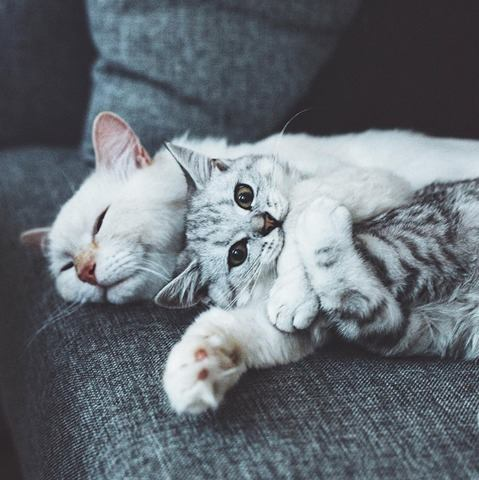
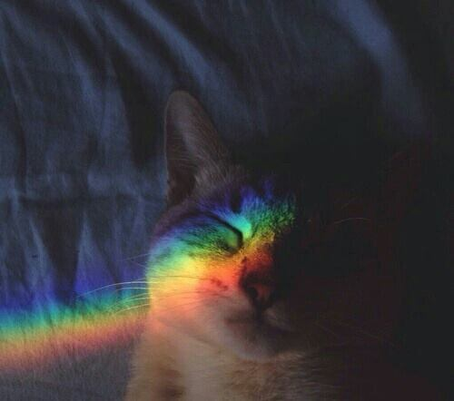
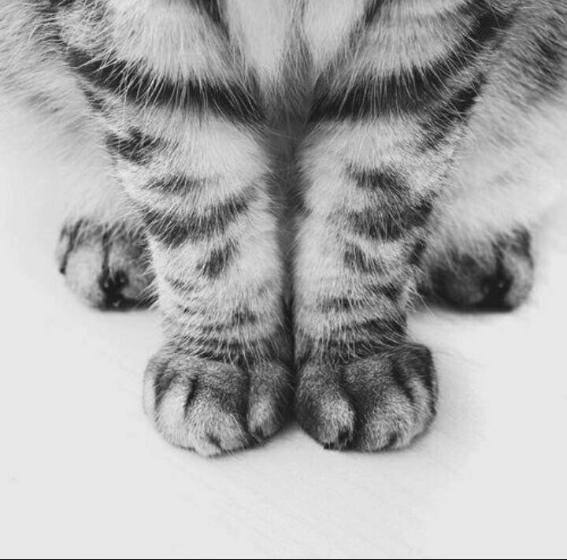
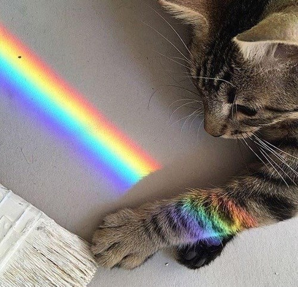
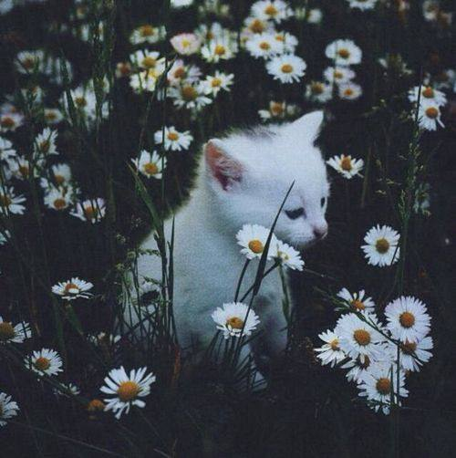

White cats with blue eyes
are prone to deafness


Cats live longer
when they stay indoors.
when they stay indoors.

Cats' collarbones don't connect
to their other bones,
as these bones are buried
in their shoulder muscles.
to their other bones,
as these bones are buried
in their shoulder muscles.

Cats dream,
just like people do.
just like people do.

MEOOOWR!

Cats have an extra organ
that allows them to taste
scents on the air, which is why
your cat stares at you with
her mouth open from time to time
:PPP
that allows them to taste
scents on the air, which is why
your cat stares at you with
her mouth open from time to time
:PPP

Cats find it threatening
when you make direct eye
contact with them
when you make direct eye
contact with them

Cats may yawn as a way to
end a confrontation with
another animal. Think of it
as their "talk to the hand" gesture.
end a confrontation with
another animal. Think of it
as their "talk to the hand" gesture.

A cat's learning style is
about the same as a 2- to
3-year-old child.
about the same as a 2- to
3-year-old child.